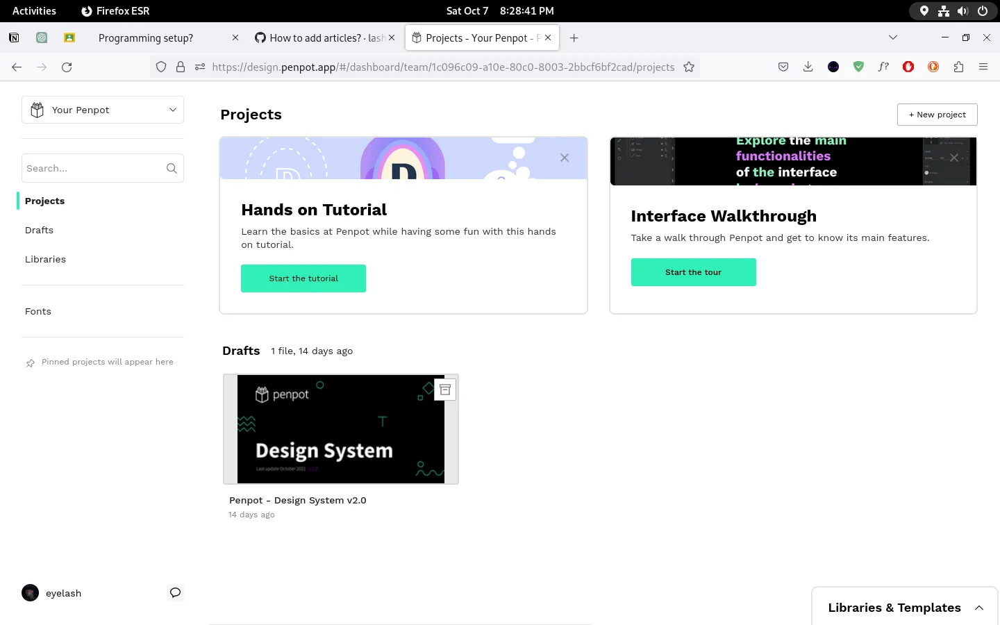
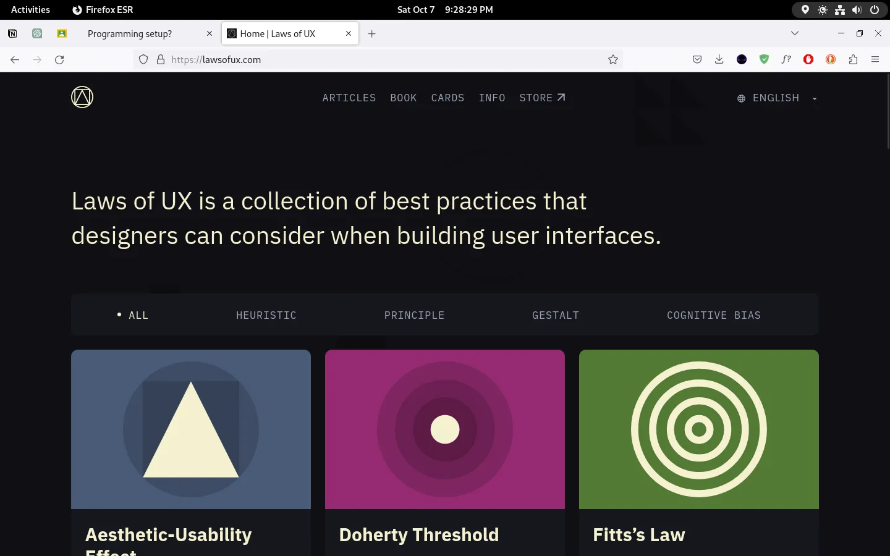

<!DOCTYPE html>
<html lang="en">
  <head>
    <meta charset="UTF-8" />
    <meta name="viewport" content="width=device-width, initial-scale=1.0" />
    <meta name="description" content="Explore by reading..." />
    <meta name="application-name" content="lash (personal)" />
    <meta name="keywords" content="blog article, ph blog, eyelash, lash" />
    <meta name="referrer" content="origin-when-cross-origin" />
    <meta name="creator" content="unknown" />
    <link rel="canonical" href="https://lashmono.space" />
    <link
      rel="alternate"
      hreflang="en-US"
      href="https://lashmono.space/en-US"
    />
    <meta
      name="format-detection"
      content="telephone=no, address=no, email=no"
    />
    <meta property="og:title" content="Programming setup?" />
    <meta property="og:description" content="Explore by reading..." />
    <meta property="og:url" content="https://lashmono.space" />
    <meta property="og:site_name" content="lash - stories" />
    <meta
      property="og:image"
      content="https://lashmono.space/async/prod/akame-seo-pt2.webp"
    />
    <meta property="og:image:width" content="1200" />
    <meta property="og:image:height" content="630" />
    <meta name="twitter:card" content="summary_large_image" />
    <meta name="twitter:title" content="Programming setup?" />
    <meta name="twitter:description" content="Explore by reading..." />
    <meta
      name="twitter:image"
      content="https://lashmono.space/async/prod/akame-seo-pt2.webp"
    />
    <link rel="preconnect" href="https://fonts.googleapis.com" />
    <link rel="preconnect" href="https://fonts.gstatic.com" crossorigin />
    <link
      href="https://fonts.googleapis.com/css2?family=Outfit:wght@400;800&display=swap"
      rel="stylesheet"
    />
    <link
      rel="stylesheet"
      href="https://cdnjs.cloudflare.com/ajax/libs/font-awesome/6.4.2/css/all.min.css"
      integrity="sha512-z3gLpd7yknf1YoNbCzqRKc4qyor8gaKU1qmn+CShxbuBusANI9QpRohGBreCFkKxLhei6S9CQXFEbbKuqLg0DA=="
      crossorigin="anonymous"
      referrerpolicy="no-referrer"
    />
    <link
      href="https://unpkg.com/boxicons@2.1.4/css/boxicons.min.css"
      rel="stylesheet"
    />
    <link rel="stylesheet" type="text/css" href="../../src/mono/art.css" />
    <script src="../../_poly.js" type="module"></script>
    <title>Programming setup?</title>
  </head>
  <body>
    <div class="scrollbtn" id="scrollTop">
      <i class="fas fa-arrow-up"></i>
    </div>
    <header class="lash-nav-contain">
      <div class="lash-parent">
        <div class="lash-logo"></div>
        <div class="lash-toggle" id="colorToggle">
          <i class="fa-regular fa-sun"></i>
        </div>
      </div>
    </header>
    <aside class="article-banner">
      
    </aside>
    <main class="article-container">
      <aside class="article-parent">
        <article class="lash-article-body">
          <!-- sponsored by niggachad -->
          <noscript>
            <div class="lash-noscript">
              
              <header>
                Wait bitch I ask you so what makes you think that you can find
                some non-javascript websites?
              </header>
              <figcaption>
                Stop being delusional you're just feeding your ass in disbeliefs
                that will never be.
              </figcaption>
            </div>
          </noscript>
          <figure class="lash-min-read">2 min read</figure>
          <header class="lash-article-header">My Programming Setup</header>
          <!-- <figcaption>
            Heylow, wassup guys let me allow you to flex something a small thing
            like what's my ideal IDE, what's my favorite OS, what's my
            prefferred hardware things and so much more this is totally implies
            for my career between designer & developer btw.
          </figcaption>
          <figcaption>
            The views and perspective of every single tech-savvy is that some of
            the advice can affect your discretion upon learning many digital
            things. Therefore, this article may only tell the opinion coming the
            author itself honestly.
          </figcaption>
          <figcaption>
            So when considering to look for what's their typically taste to
            everything I suggest to ask yourself like where you feel better at
            the most, how you maintain productivity by using these things, how
            does the tools may help you to improve your workflow and how this
            thing could actually be too long last for normal days.
          </figcaption>
          <figcaption>
            The idea of tools to me is that it's normal to have an revolutionize
            every single year and yet some of guys will practically tell a lie
            for you to encourage and deal with different things which it seems
            like you're not familiar with.
          </figcaption>
          <figcaption>
            So, in these article let's take a head to share all of my tools that
            I used for maintaining my productivity every single day let me
            repeat all of things that I wanted to share is related to design &
            development process.
          </figcaption>
          <figcaption>
            <div class="figheader">UI Design things.</div>
          </figcaption>
          <figcaption>
            Everyday, I use Figma to work with UI for my clients most of them
            are frequently international based I like their sense of critical
            thinking compared to my locally based client which I totally
            sometimes I find it not theoretical when they wanted to revise or
            add some important features just for their software.
          </figcaption>
          <figcaption>
            Based, on my experience it's normal to have an worst situation but
            the essence to me is that if I appreciate the value what I deserve I
            can think that the kind of outcome in return should be replicate to
            time that I spend to look for hangouts.
          </figcaption>
          <figcaption>
            Personally, after duty I make a plan to explore other best travel
            spots in my country (Philippines) like Laguna, Zambales and Makati
            for just hiking around the hotel & beach right there. Someday, I'm
            gonna leave my country to express my cultural revisions including
            the quality life difference to experience all thru my life.
          </figcaption>
          <figcaption>
            Anyway, Figma as of these date had now best features compared to my
            experience with Adobe XD i don't care about their partnerships but
            someday I'm gonna move my designs to Penpot software.
          </figcaption>
          <figcaption>
            Penpot is my a replacement to figma simple because I love using Open
            Source Softwares in my ideology the time to believe in using
            proprietary softwares for you is not totally a big deal but the idea
            to me is that I want the complex security more.
          </figcaption>
          <figcaption>
            Someday, I'm gonna have to write my blog why I preferred using Open
            Source Software rather proprietary based.
          </figcaption>
          <picture>
            
            <span class="media-info">Penpot's Startup</span>
          </picture>
          <figcaption>
            As you can see this is quite similar to Figma design startup as of
            now I didn't make any projects but sooner I will move closer after
            my expiration of educational trial offer coming from Figma.
          </figcaption>
          <figcaption>
            The only difference between Penpot and Figma is the features and
            layers because for some reason Figma is more aggresive to maintain
            the user experience as well as Penpot.
          </figcaption>
          <figcaption>
            Penpot to me is doesn't wanted to reject many important features
            like we experience to Figma but in terms of security again I favor
            to use this because they had a pretty documentation same as figma so
            there's quite more discussion about competitive rivalry + marketing
            this is normal and this is so good.
          </figcaption>
          <figcaption>
            <div class="figheader">UI design takeaway.</div>
          </figcaption>
          <figcaption>
            My advise for the future UI designers is to learn first about the
            laws of UX because our design is just a visual prophet like it's
            just there then you can leave it after so this is my 3 reasonings:
            <ul>
              <li>
                By learning laws of UX can reflect for you to understand more
                weird things.
              </li>
              <li>
                By learning laws of UX will tell that if you work for case study
                is that you can explain clearly to your client or someone else
                for the simple questionings like why does this exist, and how
                does this feature could benefit compare to anything just like
                that.
              </li>
              <li>
                By learning laws of UX will tell that once you understand the
                aesthetic-usability effect would change your mind that all of
                your designs will be simple as much as possible. After it you
                will never wanted to work with more complicated + aesthetical
                colors which you can see around the 3D corners that's fine.
              </li>
            </ul>
          </figcaption>
          <picture>
            
            <span class="media-info">Laws of UX | My Good Resource to Learn</span>
          </picture>
          <figcaption>
            Then, after you can freely do whatever you wish to improve your
            UI designs upto the average level of artistic thinking when I wanted 
            to use the word "professional" it really doesn't look like that much
            it's just about your productivity + creativity level very likely.
          </figcaption> -->
          <!-- <div id="github-gist">
            <script src="https://gist.github.com/lash0000/cd38e660e5e682a1b91538c6b1a0920c.js"></script>
          </div> -->
          <figcaption>
            still writing at the moment.
          </figcaption>
        </article>
      </aside>
      <!-- <footer class="after-reading">
        <figure>Enjoyed reading?</figure>
        <figcaption>
          Is it that so? you might not need to follow me on twitter stranger!
          just explore more articles here if you wanted to learn more things
          that I only know lol.
        </figcaption>
      </footer> -->
    </main>
    <script src="../separate.js"></script>
  </body>
</html>
